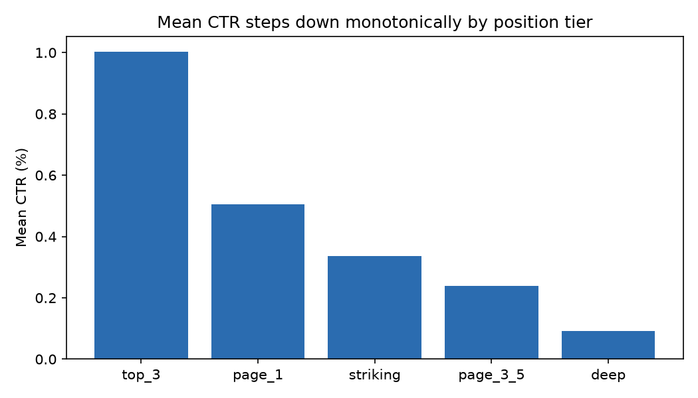
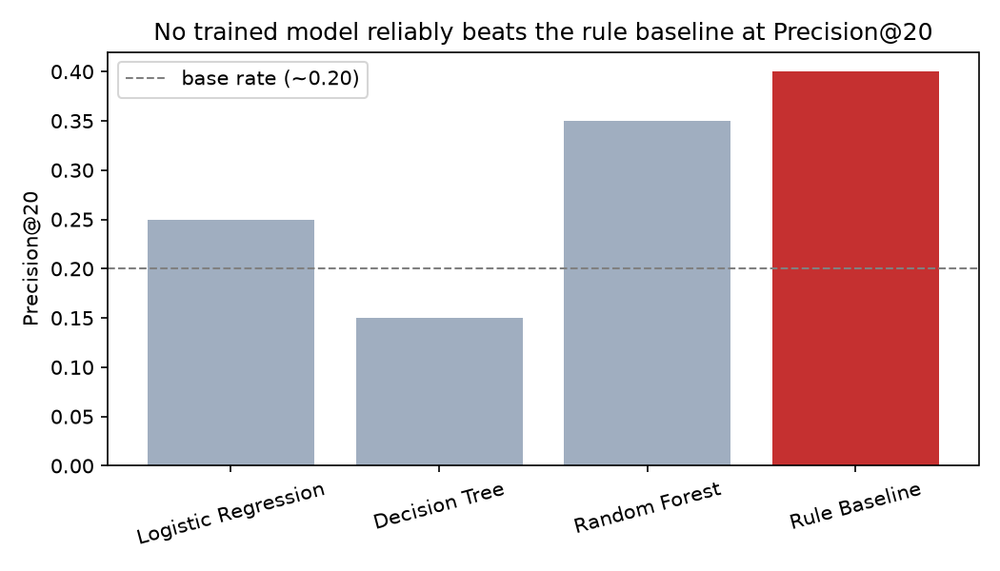
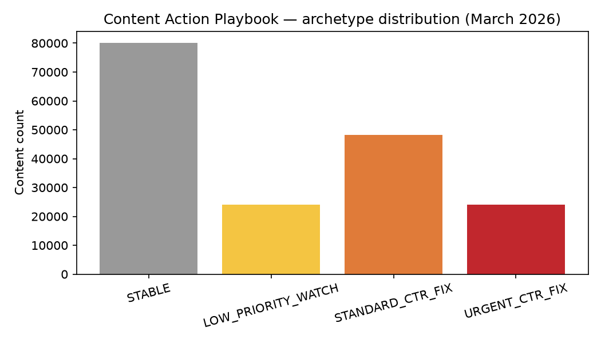

Content teams at FlyRank manage large portfolios where editor time is the scarce resource — knowing which pages to fix first, out of thousands, is a real day-to-day bottleneck. Using FlyRank's pseudonymized warehouse (176,738 content items with real March 2026 search data, drawn from a 79M-row release), we built and validated a content-prioritization system to address exactly this problem. A transparent rule — ranking content by CTR gap relative to its own position-tier baseline, weighted by traffic volume — was compared against trained classifiers (Logistic Regression, Decision Tree, Random Forest) predicting real, observed April CTR improvement under a client-grouped validation split. The rule-based baseline proved competitive with or better than the trained models at the metric that matters most for a real editor queue (precision@20); a leakage and validation audit confirmed this comparison was fair and free of future-window or label-derived contamination. The output is a ranked, human-reviewed action playbook — not an automated system — intended as decision-support for FlyRank's content teams triaging search-visibility opportunities across their client portfolios.
Introduction & Problem
Out of a large content portfolio, which pages should a content editor review first, this week, given limited time? Not "is this page declining, yes/no" in isolation — an editor works a sorted queue, not a set of binary flags.
The decision this supports: an editor opens a ranked list, works from the top, and for each flagged page verifies whether a fixable problem exists before spending time on it. A wrong call has an asymmetric cost — a false positive wastes scarce editor time, while a false negative lets a real underperformer keep losing recoverable clicks, quieter but compounding. This asymmetry is why precision@20 is the primary metric throughout this work, not overall accuracy.
A plain rule alone does not hold up against this portfolio's own data. Position tier alone does not cleanly separate underperformers, editorial-history data in this warehouse behaves inconsistently with real edit activity, and CTR's relationship with position and traffic volume is real but weak and unevenly distributed. This is exactly the kind of tangled, multi-signal pattern that benefits from a scored, validated ranking approach — tested against a real, observed outcome — rather than a single hand-written rule taken on faith.
Data
Source: FlyRank's pseudonymized ML internship warehouse (gated release
v20260703), specifically fact_content_daily_performance
(78,835,655 rows, report-date × client × content grain) and dim_content
(519,606 rows). This work uses two months from that release: March 2026
(the feature window) and April 2026 (the outcome window for a real,
observed target).
Columns used: Google Search Console–derived metrics (impressions, clicks, average position) aggregated per content item per month, plus static content metadata (content type, search volume, competition, primary intent, word count).
Columns deliberately excluded, and why:
- Any pre-computed trend/direction column — using it as a feature would let a model learn a rule instead of a real pattern.
- GA4/session/AI-referral columns — under 5% real coverage in this slice; a feature here would mostly encode tracking availability, not engagement.
- Publish/delete flags and optimization-scheduling dates — these encode a prior human or product decision, not an observed performance signal.
- A content "last updated" date — found to behave like a synthetic/batch-generated field rather than real editorial history, excluded from all staleness-related reasoning.
- Rows carrying a sentinel "no data" position value despite real impressions (4.5% of position-available data) — excluded from position-weighted calculations.
Methodology
Baseline — a transparent, hand-built rule
For content in a confirmed-visible position tier, the baseline scores:
score = (tier's 75th-percentile CTR − page's CTR) × log(1 + impressions)Content is compared against its own tier's 75th-percentile CTR — not a single global threshold and not the tier median, since median CTR is 0.0 in every tier except the very top (most pages get zero clicks regardless of position). Traffic volume is log-dampened so a small number of extreme-impression pages don't dominate the ranking.
Model
Three classifiers were compared, cheapest first — Logistic Regression, Decision Tree,
Random Forest — each producing a continuous score (not a binary flag) so results stay
comparable to the baseline's ranking. The target, target_ctr_improved, is 1 if
a content item's real April CTR exceeded its real March CTR, else 0 — an outcome observed
in a genuinely later time window, not derived from any pre-computed rule.
Validation design
All splits are grouped by client, not by row. A direct before/after test found a naive random 80/20 split placed 42 of 46 clients in both train and test simultaneously, inflating precision@20 from an honest 0.55 to an overstated 0.75 — purely from the model partially memorizing client-specific baseline behavior. All reported results use the grouped split, with zero client overlap.
Leakage checks
Three attacks were run against the final feature set: a future-window column was deliberately added and confirmed to inflate the score when present, then removed; every feature was correlated against the real target with none exceeding ±0.20; and both source tables were scanned for product/decision-flag columns, all confirmed absent from the trained feature set.
Results


| Method | AUC | Precision@20 | Precision@100 |
|---|---|---|---|
| Logistic Regression | 0.558 | 0.25 | 0.15 |
| Decision Tree | 0.660 | 0.15 | 0.73 |
| Random Forest | 0.651 | 0.35 | 0.33 |
| Rule Baseline | 0.601 | 0.40 | 0.43 |
| Base rate | — | ~0.20 | ~0.20 |
No trained model reliably beat the rule-based baseline at precision@20. Decision Tree's headline precision@100 (0.73) looked strong, but its own precision@20 (0.15) was the weakest number in the table — a concrete illustration of why reporting only one cutoff would have hidden a real weakness exactly where an editor looks first.
A follow-up test with an extended feature set showed a Decision Tree reaching precision@20 of 0.95 on a single split — but this did not survive 5-fold grouped cross-validation (mean 0.570, std 0.248, fold range 0.20–0.90). With roughly 9 clients per fold, individual client behavior swings results substantially; this is reported as a directional, low-confidence signal, not a confirmed improvement.
Interpretation
The Decision Tree's feature importances were dominated by total impressions (71.4%), with current CTR (10.6%) and active days (9.1%) a distant second and third — extended content metadata (search volume, competition, word count) each contributed under 3%. In plain terms: whether a page's CTR improves is mostly predictable from how much traffic it already receives, weakly from its current CTR, and barely at all from static content attributes in this dataset.

Limitations & Honest Framing
- Single-month training window. Both the rule and the models are built from one month, validated against the next — a two-month slice of a ~17-month warehouse. Longer-term seasonality and algorithm shifts are not captured.
- Small usable client pool. Only 46 of 104 total clients have real data in both months; cross-validation used roughly 9 clients per fold, producing real, substantial variance that limits confidence in any single result.
- Uneven per-client data coverage. Median per-client coverage was just 8% of days in the feature month, ranging from 0% to 92% — a structural property of the underlying data collection.
- Rule vs. model is not a settled question. The rule was competitive with or ahead of every model tested here — this reflects the specific feature set and time window available, not a general claim that rules beat models for this class of problem.
- Not causal, and not a Google-algorithm model. Every score reflects an association between earlier-observed features and a later-observed outcome. No title/meta rewrite is guaranteed to produce the score's implied improvement — a controlled experiment would be needed to make any causal claim, and none was run here.
Ranked Recommendations
All content is sorted into four archetypes by the rule-based score — not the trained model, per the Results above:
| Archetype | Count | Avg. score | Action |
|---|---|---|---|
| Urgent CTR fix | 24,152 | 1.81 | Review this week |
| Standard CTR fix | 48,293 | 0.97 | Review this sprint |
| Low priority watch | 24,145 | 0.30 | Note, don't prioritize yet |
| Stable | 80,148 | 0.00 | No action needed |
How an editor uses this tomorrow: open the top archetype, work down the list, verify each page's CTR gap directly in Search Console before touching anything, then rewrite title/meta only after confirming it's a fixable snippet problem rather than expected searcher behavior for that query.
Reproducibility
Full pipeline, notebooks, and code: github.com/Vishal-141206/flyrank-ml-internship
Notebooks run in this order under work/notebooks/: research framing → task
framing → data contract → feature/leakage audit → signal audit → baseline score → model
comparison → validation audit → action playbook → this capstone. Each notebook re-queries
the warehouse fresh via DuckDB — no local data files are committed. All model training and
splitting uses a fixed random seed (42) throughout.